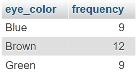
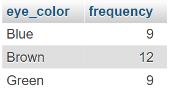

📝 Homework #02
Explain the concept of dataset and distribution
Dataset
A dataset is a matrix in which:
- The rows are the statistical units: the things we want to study.
- The columns are their variables: the attributes of the statistical units we interested in, operationalized in some way.
Distribution
A distribution rapresent the way in which a certain variable manifests itselfe in a dataset
In Descriptive Statistics a distribution rapresents the frequency in which diffents values of a variable manifest themselfe in a dataset. A distribution can be univariate, concerning just one attribute, bivariate, considering two variables, or multivariate.
In Inferential Satistics a distribution rapresents all the possible values a certain variable can assume with the probability that value accours. It is a mathematical model binding a specific probability for each possible value.
Using a DBMS create a simple dataset. Compute the univariate distribution.
🏆For champions: compute a bivariate distribution
Using MariaDB I've created a simple dataset containing the heights, the eye color and hair color of a group of people:

Univariate Distributions
The following tables show the univariate distribution for each variable. These distributions were obtained running the following SQL queries:
SELECT
<attribute>,
COUNT(<attribute>) AS frequency
FROM
`homework-01`
GROUP BY
<attribute> 


Bivariate Distributions
The following tables show the bivariate distribution for each couple of variables. These distributions were obtained running the following SQL queries:
SELECT
<attribute1>,
<attribute2>,
COUNT(*) AS frequency
FROM
`homework-01`
GROUP BY
<attribute1>,
<attribute2>
ORDER BY
<attribute1> ASC, frequency DESC


Strumento Interattivo: Crittanalisi del Cifrario di Cesare
1. Inserisci il Testo Cifrato da Analizzare
2. Testo Decifrato
3. Dettagli dell'Analisi
I risultati dell'analisi (Lingua, Rotazione, Dettagli di somiglianza) appariranno qui.
Funzionalità Accessoria: Cifratura (Encode)
Inserisci il plaintext da cifrare
Crypted text
Progetto realizzato in JavaScript per l'analisi statistica dei cifrari a sostituzione semplice.